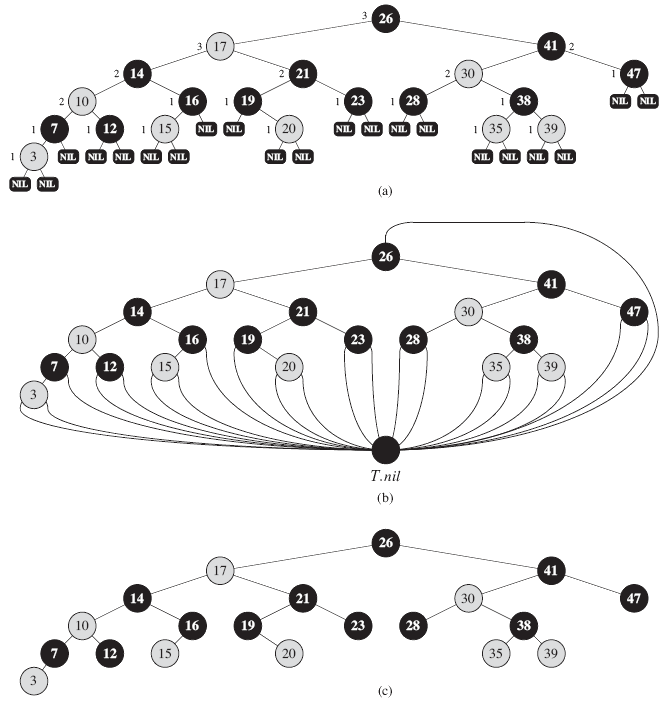
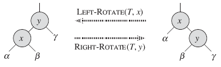
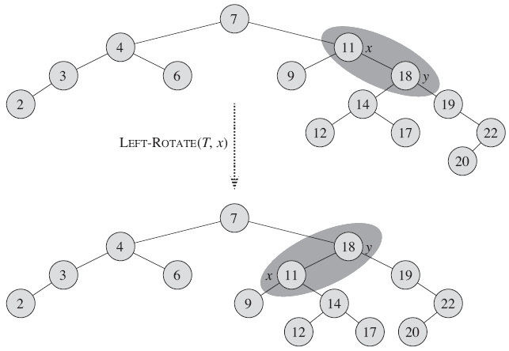
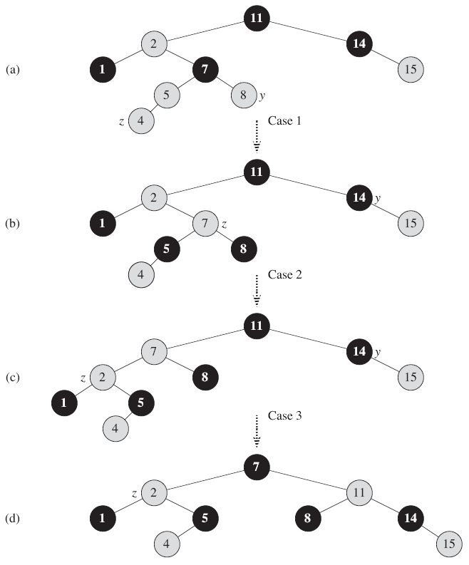
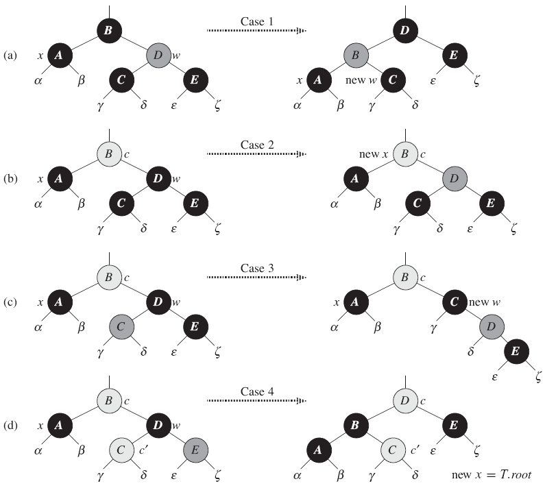

13.1 Properties of red-black trees
빨강검정 나무 (red-black tree)
빨강/검정을 표시하는 비트를 추가한 이진 검색 나무
빨강검정 특성 (Red-black properties)
- 모든 마디는 빨강 또는 검정이다.
- 근은 검정이다.
- 모든 나뭇잎(NIL)은 검정이다.
- 마디가 빨강이면 자식들 모두는 검정이다.
- 각 마디에 대해서, 마디에서 후손 나뭇잎(descendant leave) 까지의 모든 단순 경로(simple path)는 같은 수의 검정 마디를 포함한다.
검정 높이 (black-height)
(마디 x를 제외한) 마디 x부터 나뭇잎까지의 단순 경로에 있는 검정 마디 수. (기호: bh(x))
- 내부 마디(internal node) : 나뭇잎을 제외한 노드
- 외부 마디(external node) : 나뭇잎

그림 13.1 검정은 검은색으로 빨강은 회색으로 칠해진 빨강검정 나무. (a) 모든 나뭇잎(NIL)은 검정이다. NIL이 아닌 마디는 검정 높이로 표시된다. NIL은 검정 높이가 0이다. (b) 각 NIL이 감시인 T.nil로 바뀐 동일한 빨강검정 나무. 근의 부모 또한 감시인이다. (c) 감시인이 생략된 동일한 빨강검정나무. 이 장의 나머지 부분은 이 형태를 사용할 것이다.
* 감시인(sentinel) T.nil은 나무의 일반 마디와 같은 속성을 가진 객체이다.
보조정리 13.1 n개의 내부 마디를 가진 빨강검정 나무의 최대 높이는 2 lg(n+1) 이다. |
높이가 h인 이전 검색 나무의 SEARCH, MINIMUM, MAXIMUM, SUCCESSOR, PREDECESSOR 연산은 O(lg n) 이므로 빨강-검정 나무 또한 O(lg n)이 걸린다.
13.2 Rotations
탐색-나무 연산인 TREE-INSERT, TREE-DELETE를 빨강검정 나무에 사용하면 빨강검정 특성이 깨질 수 있다. 이 문제를 해결하기 위해 포인터 구조를 회전(rotation)을 사용해 변경해야 한다.
회전 (rotation)
이진 탐색 트리 속성을 유지하는 탐색 트리에서의 지역 연산(local operation)으로 왼쪽 회전과 오른쪽 회전이 있다.
가정
- 노드 x에서 왼쪽 회전을 할 때 오른쪽 자식은 T.nil이 아니다.

그림 13.2 이진 탐색 나무에서의 회전.
LEFT-ROTATE(T,x)
y = x.right // set y
x.right = y.left // turn y's left child into x's right subtree
if y.left ≠ T.nil
y.left.p = x
y.p = x.p // link x's parent to y
if x.p == T.nil
T.root = y
elseif x == x.p.left
x.p.left = y
else x.p.right = y
y.left = x // put x on y's left
x.p = y
LEFT-ROTATE와 RIGHT-ROTATE 실행시간은 O(1) 이다.

그림 13.3 LEFT-ROTATE(T,x)가 이진 탐색 나무를 수정하는 과정.
13.3 Insertion
삽입 실행시간: O(lg n)
RB-INSERT(T,z)
y = T.nil
x = T.root
while x ≠ T.nil
y = x
if z.key < x.key
x = x.left
else x = x.right
z.p = y
if y == T.nil
T.root = z
elseif z.key < y.key
y.left = z
else y.right = z
z.left = T.nil
z.right = T.nil
z.color = RED
RB-INSERT-FIXUP(T,z)
RB-INSERT-FIXUP은 빨강검정트리의 속성을 유지하기 위해 사용된다.
RB-INSERT-FIXUP(T,z)
while z.p.color == RED
if z.p == z.p.p.left
y = z.p.p.right
if y.color == RED
z.p.color = BLACK // case 1
y.color = BLACK // case 1
z.p.p.color = RED // case 1
z = z.p.p // case 1
else
if z == z.p.right
z = z.p // case 2
LEFT-ROTATE(T,z) // case 2
z.p.color = BLACK // case 3
z.p.p.color = RED // case 3
RIGHT-ROTATE(T,z.p.p) // case 3
else (same as then clause with "right" and "left" exchanged)
T.root.color = BLACK

그림 13.4 RB-INSERT-FIXUP 연산.
13.4 Deletion
삭제 실행시간 : O(lg n)
RB-TRANSPLANT(T,u,v)
if u.p == T.nil
T.root = v
elseif u == u.p.left
u.p.left = v
else u.p.right = v
v.p = u.p
RB-DELETE(T,z)
y = z
y-original-color = y.color
if z.left == T.nil
x = z.right
RB-TRANSPLANT(T,z,z.right)
elseif z.right = T.nil
x = z.left
RB-TRANSPLANT(T,z,z.left)
else y = TREE-MINIMUM(z.right)
y-original-color = y.color
x = y.right
if y.p == z
x.p = y
else RB-TRANSPLANT(T,y,y.right)
y.right = z.right
y.right.p = y
RB-TRANSPLANT(T,z,y)
y.left = z.left
y.left.p = y
y.color = z.color
if y-original-color == BLACK
RB-DELETE-FIXUP(T,x)
RB-DELETE-FIXUP(T,x)
while x ≠ T.root and x.color == BLACK
if x == x.p.left
w = x.p.right
if w.color == RED
w.color = BLACK // case 1
x.p.color = RED // case 1
LEFT-ROTATE(T,x.p) // case 1
w = x.p.right // case 1
if w.left.color == BLACK and w.right.color == BLACK
w.color = RED // case 2
x = x.p // case 2
else
if w.right.color == BLACK
w.left.color = BLACK // case 3
w.color = RED // case 3
RIGHT-ROTATE(T,w) // case 3
w = x.p.right // case 3
w.color = x.p.color // case 4
x.p.color = BLACK // case 4
w.right.color = BLACK // case 4
LEFT-ROTATE(T,x.p) // case 4
x = T.root // case 4
else (same as then clause with "right" and "left" exchanged)
x.color = BLACK

그림 13.7 RB-DELETE-FIXUP에 있는 while문의 여러가지 경우들.